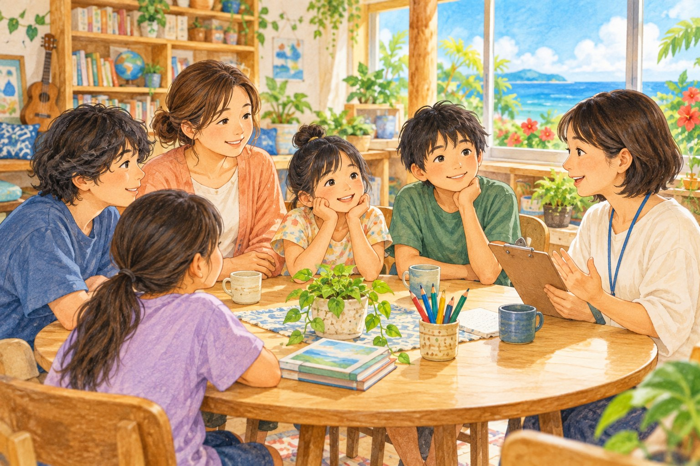

沖縄県フリースクール等に通う児童生徒の実態調査 ご協力のお願い

現在、沖縄県内のフリースクール等に通う児童生徒の実態調査を実施しております。
学校以外の学びや居場所に関わる皆さまの声をお聞きし、今後のこどもたちへの支援のあり方を考えるための大切な調査です。ぜひご協力をお願いいたします。
調査の対象・回答期限
- 対象となる方
- 沖縄県内の6〜18歳のお子さまと保護者の方
- フリースクールや居場所を運営されている方
- 回答期限
詳しい内容・回答方法
調査の詳細や回答方法は、ケイスリー株式会社の案内ページをご確認ください。
案内ページ：https://www.k-three.org/post/20261005
本調査は、沖縄県からの委託を受けてケイスリー株式会社が実施しています。